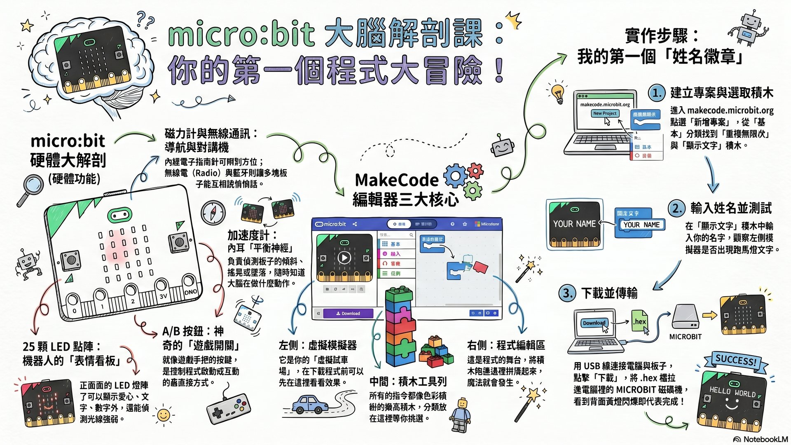
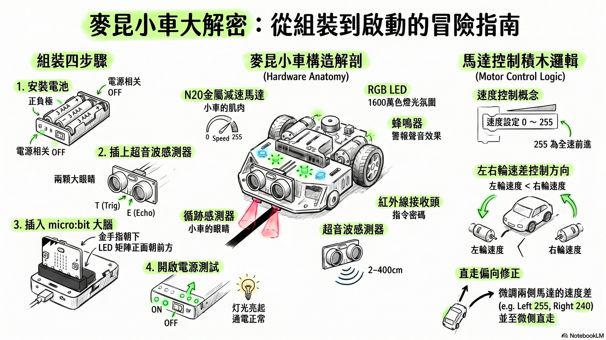
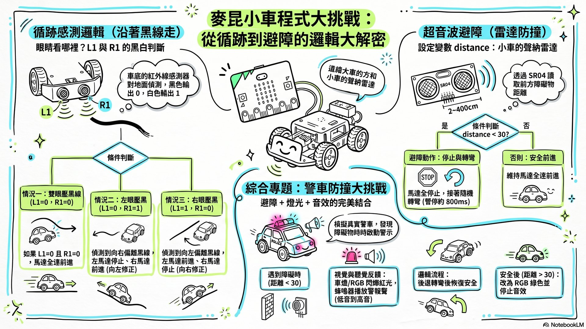
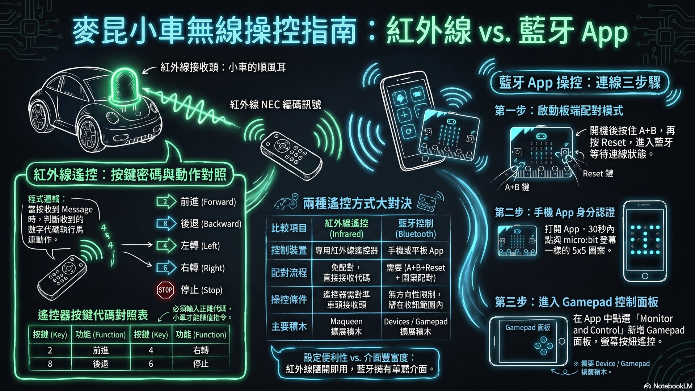

► 開機啟動：成為麥昆小車程式設計師！
嗨！我是阿凱老師。今天我們要用「micro:bit 大腦」搭配「麥昆 Maqueen 機器小車」，從拖曳積木到讓小車自己沿黑線跑、自己避開障礙物、用平板遙控… 全部你都能做到！跟著 8 個關卡循序漸進，最後挑戰自己做一台會閃燈響警報的「智慧警車」！
📡 認識 micro:bit 大腦
micro:bit 是英國 BBC 設計、比信用卡還小的「電子大腦」。它一片就有 25 顆 LED 燈、A/B 兩顆按鈕、加速度計、磁力計（指南針）、無線電、藍牙。把它插上麥昆小車，就成為機器人的「中央處理器」。
🔍 micro:bit 的六大超能力（用比喻記）
- 125 LED 點陣：機器人的「表情看板」，可顯示愛心、笑臉、文字訊息
- 2A/B 按鈕：兩顆「神奇開關」，像遊戲手把按鍵
- 3加速度計：「內耳平衡神經」，知道板子有沒有傾斜搖晃
- 4磁力計：「內建指南針」，知道方位東南西北
- 5無線電 (Radio)：「對講機」，多塊 micro:bit 可以互相通訊
- 6藍牙 (Bluetooth)：「隱形傳輸線」，連接手機 / 平板
🎯 形成性評量
👨🏫 教師提示
可以讓學生實際拿著 micro:bit 板子，請他們找出每一個「超能力」的位置（25 個 LED、A/B 按鈕、Reset 鍵、USB 接頭）。提醒學生不要用力扳折板子。🧩 MakeCode 圖形化積木編輯器
MakeCode 是微軟開發的免費線上程式編輯器，不用安裝、打開瀏覽器就能用。寫程式就像玩樂高積木，拖曳拼湊就能完成。
🚀 第一個程式「姓名徽章」操作步驟
- 1打開瀏覽器，輸入
makecode.microbit.org - 2點選「新增專案」，認識三大區塊：左：模擬器、中：積木工具列、右：編輯區
- 3從「基本」拖出「重複無限次」積木到編輯區
- 4放入「顯示文字」積木，輸入自己的名字
- 5用 USB 線連接 micro:bit，電腦會跳出名為 MICROBIT 的隨身碟
- 6點「下載」→ 把 .hex 檔拉進 MICROBIT 隨身碟。完成！🎉
// 效果：心形圖案閃爍
📦 加入麥昆 Maqueen 擴展庫
- 1點右上齒輪 ⚙️ → 選「擴展 (Extensions)」
- 2搜尋
Maqueen或貼網址github.com/DFRobot/pxt-maqueen - 3載入後，工具列會多出綠色 Maqueen 積木
🎯 形成性評量
🚗 麥昆小車組裝啟動
如果 micro:bit 是大腦，那麥昆小車就是聽從大腦指揮的身體！它身上有馬達（雙腿肌肉）、循跡感測器（眼睛）、超音波模組（聲納）、RGB 燈（霓虹底盤）、蜂鳴器（嘴巴）、紅外線接收頭（順風耳）。
🔧 組裝四步驟
- 1裝電池：打開電池盒，裝入 3 顆 AAA (7號) 電池，注意正負極（電源開關必須在 OFF）
- 2插超音波：把兩顆「大眼睛」（SR04）插在車頭專屬插槽，T 對 trig、E 對 echo
- 3插 micro:bit：金手指朝下，正面（LED 矩陣）朝前方，插入小車黑色插槽
- 4開電源：打開車尾電源開關（切到 ON），看小車是否亮起電源指示燈
🎯 形成性評量
⚡ 馬達控制（讓小車動起來）
馬達是小車的「雙腿肌肉」。MakeCode 的馬達積木可以分別控制左輪、右輪、或全部，方向選擇前進 / 後退，速度範圍 0~255。兩輪速度差就是轉彎的關鍵！
🚦 操作步驟
- 1拖出「重複無限次」積木
- 2放入「馬達 (全部) 方向 (前進) 速度 (100)」
- 3加「暫停 (毫秒) 1000」（前進 1 秒）
- 4改成「左馬達 速度 0、右馬達 速度 100」→ 小車左轉
- 5練習：用 A 鍵控制前進、B 鍵後退、A+B 停止
🎯 形成性評量
👨🏫 教師提示
建議在這關後安排「方塊積木遊戲」：用紙膠帶在地上貼一個 1m × 1m 方框，學生要寫程式讓車子沿方形邊緣繞一圈。會發現「轉 90 度」需要實測時間（不同電量、不同地板差異很大）。📏 循跡感測（沿著黑線跑）
車底有 L1、R1 兩顆紅外線感測器，像「永遠盯著地板看的眼睛」。它分辨黑與白：黑線輸出 0、白色輸出 1。靠這兩顆眼睛 + 「如果...那麼...否則」邏輯判斷，車子就能像火車一樣沿著黑線跑！
🧠 循跡邏輯（4 種情況）
- 1L1=0 且 R1=0（兩顆都壓黑線）→ 馬達全前進
- 2L1=0 且 R1=1（左壓黑、右偏白）→ 左馬達停、右馬達前進（向左修正）
- 3L1=1 且 R1=0（右壓黑、左偏白）→ 左馬達前進、右馬達停（向右修正）
- 4L1=1 且 R1=1（兩顆都白）→ 跑出黑線了，停止或慢慢轉
🎯 形成性評量
📐 超音波避障（不撞牆）
超音波模組就像蝙蝠的聲納雷達：發出聲波→撞到障礙物彈回→計算距離。設定一個安全距離（例如 30 公分），距離小於 30 就煞車轉彎，這就是自動駕駛車「自動煞車系統 (AEB)」的雛型！
🛑 程式邏輯
- 1建立變數
distance - 2在「重複無限次」中：
distance = 讀取超音波 (CM) - 3如果 distance < 30 → 馬達停 → 馬達右轉 → 暫停 800 毫秒
- 4否則（安全前進）→ 馬達全前進
100ms 延遲防止錯誤訊號。🎯 形成性評量
📱 無線遙控（紅外線 + 藍牙）
麥昆有兩種無線遙控方式：紅外線遙控器（像電視遙控器）+ 藍牙手機/平板 App（用 Gamepad 搖桿）。
🎮 紅外線遙控（按鍵代碼對照）
- 1「當啟動時」設定紅外線接收引腳
- 2拖「當紅外線接收到 message」積木（自動建立 message 變數）
- 3對應按鍵代碼：2 前進、8 後退、4 左轉、6 右轉、5 停止
📱 藍牙手機/平板 App 控制
- 1平板下載 micro:bit 官方 App
- 2micro:bit 開機，同時按住 A+B 鍵不放，按一下背面 Reset 鍵
- 330 秒內在 App 點亮跟板子上一模一樣的 5×5 圖案
- 4MakeCode 加 Devices 擴展，寫 Gamepad 按鈕對應馬達動作
- 5App 開「Monitor and Control」→ Add → 新增 Gamepad → Start！
🎯 形成性評量
👨🏫 教師提示
藍牙配對失敗常見原因：(1) 30 秒超時 → 重新進入配對模式；(2) USB 供電不穩 → 改用小車電池供電。教學時建議讓學生兩兩一組，輪流操作。🚓 警車防撞綜合專題（實戰挑戰）
最終 Boss 戰！綜合「超音波避障 + 警報音效 + 紅藍車燈閃爍」做出真正的智慧警車：平常巡邏前進，遇到障礙物就煞車轉彎、發出警報並閃紅藍燈！
🎬 完整邏輯
- 1設定
distance讀取超音波 - 2如果 distance < 30（遇到障礙）：
- → 馬達後退 + 隨機左/右轉
- → 蜂鳴器播放警報音效（從低音爬升到高音）
- → 車燈/RGB 紅色閃爍
- 3否則（安全前進）：
- → 馬達全前進
- → 停止音效
- → RGB 改為綠色（巡邏中）
🎯 形成性評量
🏁 今日實作任務（5 大挑戰賽）
完成 8 個關卡後，分組挑戰下面任務，看哪一組最強！
🏎️ 終極循跡賽道
計時賽，沿黑線跑完全程（含 M 字彎、十字路口）。跑出黑線 +5 秒罰時。
🧱 迷宮大逃亡
純靠超音波避障程式走出紙盒迷宮。基本分 100，每撞倒一個 -10 分。
🚓 城市警車巡邏
紅綠燈 + 警報聲 + 紅藍車燈 + 自動避障，做出最炫的警車（造型 + 程式 50 分）。
🔦 追光救援大作戰
用手電筒光線引導小車回救援區。不能用手碰車，靠光線感測器。
⚽ 藍牙遙控足球賽
兩兩一組，平板搖桿控制小車推球進門。每場 3 分鐘進球數對決。
📊 重點資訊圖表（NotebookLM 自動生成）
點圖放大，掃 QR Code 帶回家複習




📽 授課簡報（13 頁）
點縮圖跳頁，按 ⛶ 全螢幕，用左右鍵翻頁
▶ 學生自學影片（NotebookLM × YouTube）
建議用耳機觀看，可搭配上方簡報一起複習
🔗 NotebookLM 教學資源站
本駕駛艙由 NotebookLM 深度搜尋 + Claude Code 自動生成。3 個筆記本你都可以打開繼續探索！
📓 麥昆小車程式設計師｜教學簡報
本頁的簡報、影片、資訊圖表都從這個精簡本生成（萃取精華 + 阿凱老師主講者）
RESEARCH // 研究本📚 [研究本] 麥昆小車程式設計師
NotebookLM 深度搜尋 37 個專業來源（DFRobot 官方教學、阿玉micro:bit 研究區、大同國小、機器人競賽規則）
EDITOR // 程式編輯器🧩 MakeCode for micro:bit
免費線上拖曳積木程式編輯器。搜尋 Maqueen 擴展即可控制麥昆小車
▼ FAQ：學生最常問的問題
Q1. micro:bit 和 Arduino 有什麼不一樣？我該學哪個？
Q2. MakeCode 要付錢嗎？回家可以用嗎？
makecode.microbit.org 就能開始寫程式。回家只要有網路，隨時都能繼續創作！Q3. 螢幕旁邊那個會動的「模擬器」有什麼用？
Q4. 麥昆小車沒電了怎麼辦？要怎麼充電？
Q5. 麥昆延伸庫安裝失敗怎麼辦？
github.com/DFRobot/pxt-maqueen 加入。